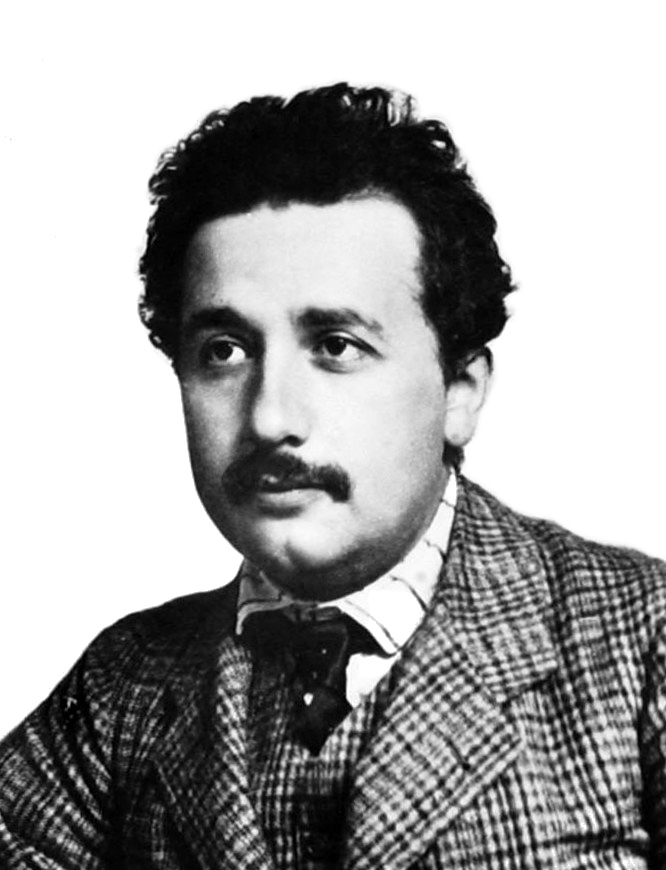

Anders Bökelunds presentationssida
Lite information om mig
Intressen
- Datorspel
- Fiske
- Golf
- Teknik och vetenskap

Familj
- Far
- Mor
- Bror
- 2 katter
Är singel, har inget emot att tjejer tar initiativet.
Vad du är bra respektive mindre bra på
-
Bra
- Saker som kräver envishet och målmedvetenhet
-
Mindre bra på
- fungera utan mat
- fungera utan sömn
Tidigare utbildning?
- Fredrika Bremer - Naturvetenskaplig gymnasieutbildning
- Komplettering av betyg på centrumvux
- KTH - Högskoleingenjör : Datateknik - Datorkommunikation och säkerthet
- Academedia - KY - Oracle Databasadministratör
- PÅGÅENDE - Plushögskolan - KY - Systemutvecklare .NET
Arbetslivserfarenhet?
- Arla Kallhäll - Ordermottagare
- Vattenfall - Elmätareavläsare
- Fruktbolaget i Stockholm AB - Lagerarbetare
- Xpeedio(Help at work ab) - IT-support tekniker i NOC miljö
Har du programmerat tidigare?
-
Ja, har tampats med följande språk i bokstavsordning
- Assembly
- Bash
- C
- Java
- js
- jsp
- Python
- PLSQL
Vad fick dig att söka utbildningen?
- Gillar programmering
- När jag först sökte KY-utbildning så var det som databasutvecklare inte administratör så jag tänkte att det dags att ta i tag i det
- Hittade praktiskt boende i närheten av utbildningen
Tankar inför framtiden?
- Att jag ska sluta använda oindexerade listor för mycket
- Fixa jobb
- Fixa LIA
- Gräva upp runt grunden och fuktisolera utsidan av husgrunden
- Fixa en bastu och toalett i duschrummet
- Fixa heltäckande gymmatta i gymmet
- Fixa mer redskap till gymmet
- Besöka en golf custom outfitter
- Orka sätta igång med raspberry projektet
- göra mer birdies(få stil på puttandet) samt sänka hcp till runt 0
- Hitta en kompatibel person av motsatta könet